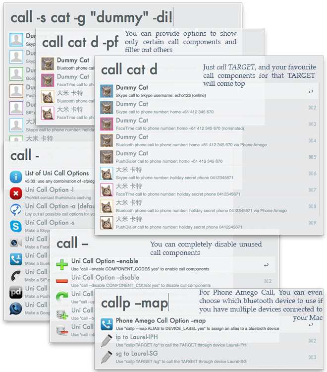
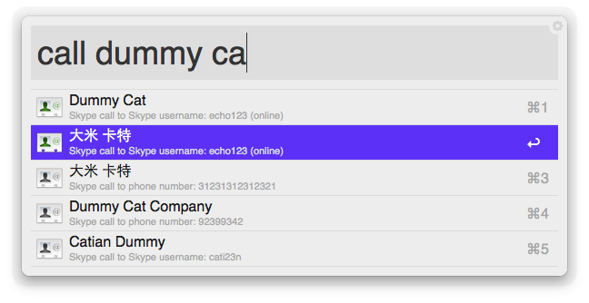
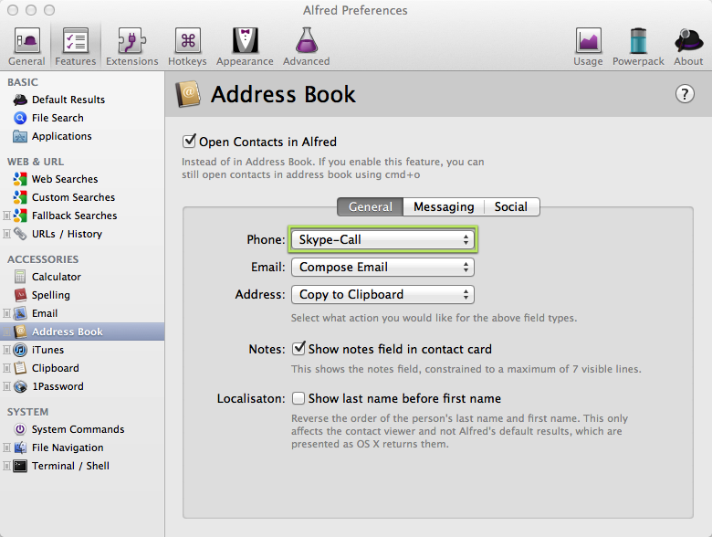
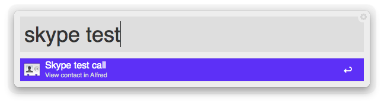
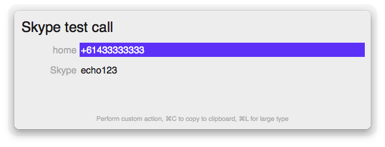
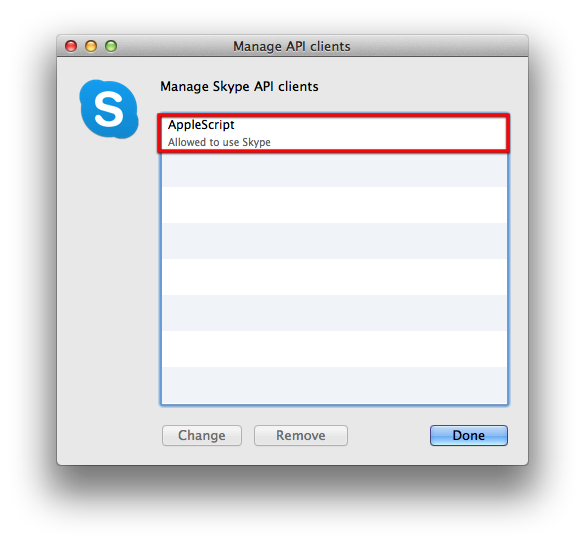

call +61 4 3333 3333
call 043333333call echo123

This is a known issue for Skype-Call.alfredextension 1.0 if you are using a non-english Skype (depends on your Mac OS X language). However, this should have already been fixed in Skype-Call.alfredworkflow 2.0. If by any change, you still encounter a similar problem, please remove the AppleScript entry from the “Skype main menu > Skype > Manage API Clients…” dialog (as shown in the following figure), and restart your Skype.
